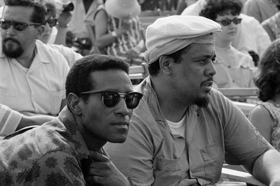

We Insist! Max Roach's Freedom Now Suite


Pubblicato a dicembre 1960. Registrato tra il 31 agosto e il 6 settembre 1960.
Cliccare sulle immagini per ascoltare!
Pubblicato a dicembre 1960. Registrato tra il 31 agosto e il 6 settembre 1960.


Pubblicato a settembre 1961. Registrato tra il 1º e il 9 agosto 1961.


Pubblicato a febbraio 1963. Registrato il 17 settembre 1962.